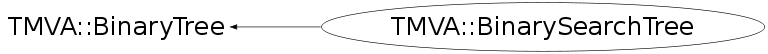

class TMVA::BinarySearchTree: public TMVA::BinaryTree
BinarySearchTree A simple Binary search tree including a volume search method
Function Members (Methods)
public:
protected:
| void | TMVA::BinaryTree::DeleteNode(TMVA::Node*) |
| TMVA::MsgLogger& | TMVA::BinaryTree::Log() const |
private:
| void | DestroyNode(TMVA::BinarySearchTreeNode*) |
| void | Insert(const TMVA::Event*, TMVA::Node*) |
| Bool_t | InVolume(const vector<Float_t>&, TMVA::Volume*) const |
| void | NormalizeTree(vector<pair<double,const TMVA::Event*>,allocator<pair<double,const TMVA::Event*> > >::iterator, vector<pair<double,const TMVA::Event*>,allocator<pair<double,const TMVA::Event*> > >::iterator, UInt_t) |
| TMVA::BinarySearchTreeNode* | Search(TMVA::Event*, TMVA::Node*) const |
| Double_t | SearchVolume(TMVA::Node*, TMVA::Volume*, Int_t, vector<const TMVA::BinarySearchTreeNode*>* events) |
Data Members
protected:
| UInt_t | TMVA::BinaryTree::fDepth | maximal depth in tree reached |
| UInt_t | TMVA::BinaryTree::fNNodes | total number of nodes in the tree (counted) |
| TMVA::Node* | TMVA::BinaryTree::fRoot | the root node of the tree |
| static TMVA::MsgLogger* | TMVA::BinaryTree::fgLogger | message logger, static to save resources |
private:
| Bool_t | fCanNormalize | the tree can be normalised |
| UInt_t | fCurrentDepth | internal variable, counting the depth of the tree during insertion |
| vector<Float_t> | fMax[2] | RMS for signal and background for each variable |
| vector<Float_t> | fMeans[2] | mean for signal and background for each variable |
| vector<Float_t> | fMin[2] | RMS for signal and background for each variable |
| Double_t | fNEventsW[2] | Number of events per class, taking into account event weights |
| vector<std::pair<Double_t,const TMVA::Event*> > | fNormalizeTreeTable | |
| UInt_t | fPeriod | periode (number of event variables) |
| vector<Float_t> | fRMS[2] | RMS for signal and background for each variable |
| Bool_t | fStatisticsIsValid | flag if last stat calculation is still valid, set to false if new node is insert |
| vector<Double_t> | fSum[2] | Sum for signal and background for each variable |
| Double_t | fSumOfWeights | Total number of events (weigthed) counted during filling |
| vector<Double_t> | fSumSq[2] | Squared Sum for signal and background for each variable |
Class Charts
{kind=link}
{kind=link}
{kind=link}
{kind=link}

Function documentation
BinarySearchTree(const TMVA::BinarySearchTree& b)
copy constructor that creates a true copy, i.e. a completely independent tree
TMVA::BinarySearchTree* CreateFromXML(void* node, UInt_t tmva_Version_Code = TMVA_VERSION_CODE)
re-create a new tree (decision tree or search tree) from XML
void Insert(const TMVA::Event* , TMVA::Node* )
private internal function to insert a event (node) at the proper position
TMVA::BinarySearchTreeNode* Search(TMVA::Event* event) const
search the tree to find the node matching "event"
TMVA::BinarySearchTreeNode* Search(TMVA::Event* , TMVA::Node* ) const
Private, recursive, function for searching.
Double_t Fill(const vector<TMVA::Event*>& events, const vector<Int_t>& theVars, Int_t theType = -1)
create the search tree from the event collection
using ONLY the variables specified in "theVars"
Double_t Fill(const vector<TMVA::Event*>& events, Int_t theType = -1)
create the search tree from the events in a TTree using ALL the variables specified included in the Event
void NormalizeTree(vector<pair<double,const TMVA::Event*>,allocator<pair<double,const TMVA::Event*> > >::iterator , vector<pair<double,const TMVA::Event*>,allocator<pair<double,const TMVA::Event*> > >::iterator , UInt_t )
Double_t SearchVolume(TMVA::Volume* , vector<const TMVA::BinarySearchTreeNode*>* events = 0)
search the whole tree and add up all weigths of events that lie within the given voluem
Double_t SearchVolume(TMVA::Node* , TMVA::Volume* , Int_t , vector<const TMVA::BinarySearchTreeNode*>* events)
recursively walk through the daughter nodes and add up all weigths of events that lie within the given volume
Bool_t InVolume(const vector<Float_t>& , TMVA::Volume* ) const
test if the data points are in the given volume
void CalcStatistics(TMVA::Node* n = 0, Int_t signalClass = 0)
calculate basic statistics (mean, rms for each variable)
Int_t SearchVolumeWithMaxLimit(TMVA::Volume* , vector<const TMVA::BinarySearchTreeNode*>* events = 0, Int_t = -1)
recursively walk through the daughter nodes and add up all weigths of events that lie within the given volume a maximum number of events can be given
Float_t Mean(TMVA::Types::ESBType sb, UInt_t var)
access to mean for signal and background for each variable
{ return fMeans[sb==Types::kSignal?0:1][var]; }Float_t RMS(TMVA::Types::ESBType sb, UInt_t var)
access to RMS for signal and background for each variable
{ return fRMS[sb==Types::kSignal?0:1][var]; }Float_t Min(TMVA::Types::ESBType sb, UInt_t var)
access to Minimum for signal and background for each variable
{ return fMin[sb==Types::kSignal?0:1][var]; }Float_t Max(TMVA::Types::ESBType sb, UInt_t var)
access to Maximum for signal and background for each variable
{ return fMax[sb==Types::kSignal?0:1][var]; }